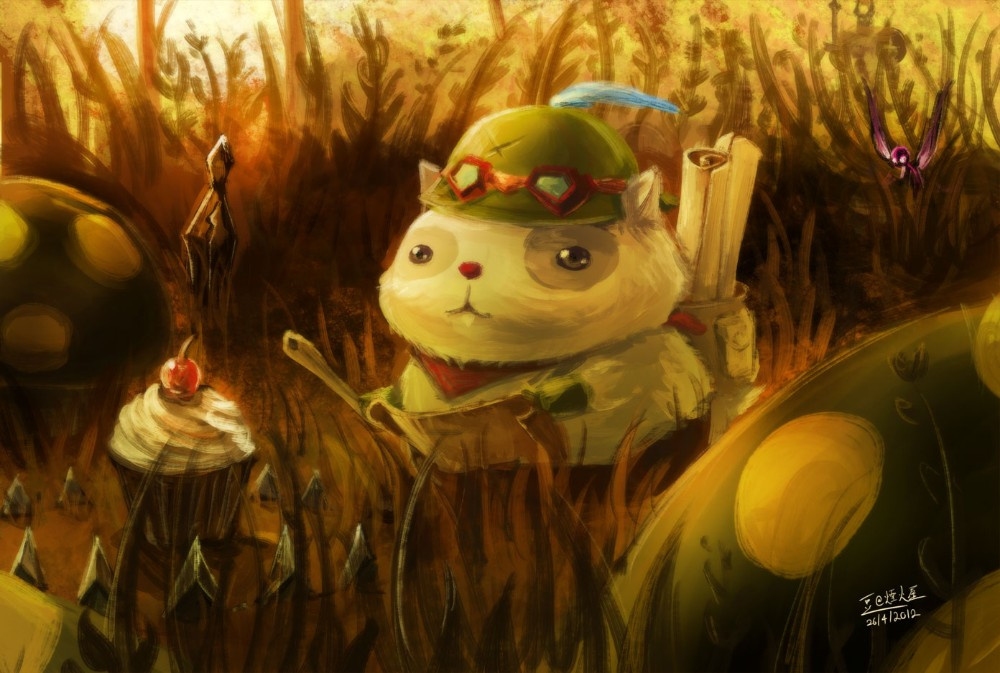

Rodrigo Alfredo Gonzalez Escobar GE18024
League of Legends

Bienvenido a la grieta del invocador
League of Legends, es un videojuego multijugador de arena de batalla en línea desarrollado y publicado por Riot Games.
Inspirándose en Defense of the Ancients, un mapa personalizado para Warcraft III,
los fundadores de Riot buscaron desarrollar un juego independiente del mismo género.